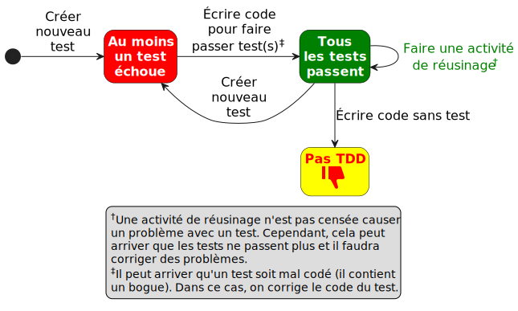
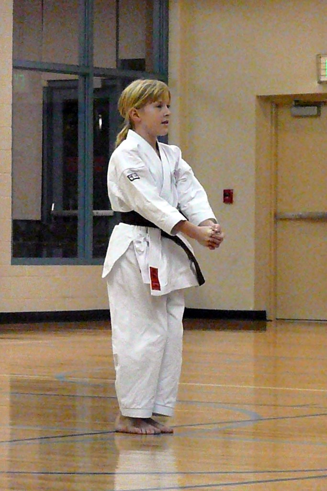

Si on écrivait des logiciels pouvant se tester automatiquement ? Le développement piloté par les tests (anglais test-driven development, TDD) est une pratique populaire et intéressante. Il s’agit d’écrire des logiciels avec un composant d’autovalidation (des tests automatisés). Mais, écrire beaucoup de tests n’est pas toujours une tâche agréable pour des développeurs. Historiquement, si on attend la fin d’un projet pour écrire des tests, il ne reste plus beaucoup de temps et l’équipe laisse tomber les tests. Pour pallier ce problème, le développement piloté par les tests propose de travailler en petits pas. C’est-à-dire écrire un test simple (en premier), puis écrire la partie du logiciel pour passer le test de manière simple (le plus simple). Ça fait moins de codage entre les validations et c’est possiblement même plus stimulant pour les développeurs.
Ainsi, il y a toujours des tests pour les fonctionnalités et le développement se fait en petits incréments qui sont validés par les tests. Faire les petits pas réduit le risque associé à de gros changements dans un logiciel sans validation intermédiaire. Au fur et à mesure qu’on développe un logiciel, on développe également quelques tests de ce dernier. Puisque les tests sont automatiques, ils sont aussi faciles à exécuter que le compilateur.
Il y a une discipline imposée dans le TDD qui nécessite d’écrire un test en premier, c’est-à-dire avant d’écrire le code. La démarche est illustrée par la figure 10.1. Beaucoup d’outils (IDE) favorisent ce genre de développement. Nous pouvons écrire un test qui appelle à une fonction qui n’existe pas encore et l’IDE va nous proposer un squelette de la méthode, avec les arguments et une valeur de retour même. Un puriste du TDD insistera sur le fait que le test soit écrit toujours en premier ! Cette discipline est parfois culturelle.
Plusieurs chercheurs ont mené des expériences, par exemple Karac et Turhan (2018), pour voir si tester en premier avait un vrai bénéfice. Les résultats de leurs analyses n’ont pas toujours montré que c’est le cas (ce genre d’expérience est difficile de faire, en partie parce qu’il n’y a pas beaucoup de développeurs en industrie qui le pratiquent). Les chercheurs ont trouvé que faire un petit test après avoir écrit le code a aussi un bénéfice sur le plan de la qualité. Dans tous les cas, des chercheurs ont trouvé que le fait de travailler en petits pas apporte toujours un avantage sur le plan de la qualité. Travailler en petits pas est utile, même sans faire du TDD de manière dogmatique.
Sachez qu’il existe beaucoup d’intergiciels (anglais frameworks) pour faciliter l’exécution automatique des tests réalisés dans le cadre du TDD. Pour Java il y a JUnit, mais il y en a pour pratiquement tous les langages et environnements. En ce qui concerne le squelette pour le laboratoire, il s’agit de Jest.
L’exécution de tests peut être même faite à chaque commit du code dans un dépôt comme GitHub.
Il est possible de mesurer la couverture de code atteinte par les tests (mais ce sujet sort du cadre de la matière de ce manuel).

Les activités de réusinage sont expliquées dans la section Réusinage (Refactorisation).
10.1 Kata TDD
Pour apprendre à faire du développement piloté par les tests (et pour apprendre les cadriciels supportant l’automatisation des tests), il existe une activité nommée « kata TDD ». Kata est un terme japonais désignant une séquence de techniques réalisée dans le vide dans les arts martiaux japonais. En voici une vidéo . C’est un outil de transmission de techniques et de principes de combat.

Alors, le « kata TDD » a été proposé par Dave Thomas et le but est de développer la fluidité avec le développement piloté par les tests. Un kata TDD se pratique avec un IDE (environnement de développement logiciel) et un support pour les tests (par exemple JUnit). Pratiquer le même kata peut améliorer votre habileté de programmation. On peut pratiquer le même kata dans un langage différent ou avec un IDE ou environnement de test différent. Le kata vous permet d’avoir une facilité avec les aspects techniques de développement dans plusieurs dimensions (complétion de code pour test et pour l’application, API de l’environnement de test, etc.).
En plus, les activités de réusinage sont normalement intégrées dans un kata. Le fait de travailler en petits pas peut faire en sorte que la dette technique s’accumule. Les IDE facilitent l’application des activités de réusinage. Un langage fortement typé comme Java permet d’avoir plus de fonctionnalités automatisées de réusinage dans un IDE qu’un langage dynamique comme JavaScript ou Python. Une activité de base de réusinage est le renommage d’une variable ou d’une fonction. Le réusinage rend le code plus facile à comprendre et à maintenir.
10.1.1 Exemple de Kata TDD FizzBuzz
L’inspiration de cet exercice vient de codingdojo.org.
Dans cet exercice, il faut écrire par le développement piloté par les tests un programme qui imprime les nombres de 1 à 100. Mais pour les multiples de trois, il faut imprimer Fizz au lieu du nombre et pour les multiples de cinq, il faut imprimer Buzz. Pour les nombres étant des multiples de trois et de cinq il faut imprimer FizzBuzz. Voici un exemple des sorties :
1
2
Fizz
4
Buzz
Fizz
7
8
Fizz
Buzz
11
Fizz
13
14
FizzBuzz
16
17
Fizz
19
Buzz
... etc. jusqu'à 10010.1.1.1 Préalables
Il faut installer un IDE qui supporte les activités de réusinage (refactorings) comme VisualStudio Code, Eclipse, IntelliJ, etc. puis un framework de test (JUnit, Mocha/Chai, jest, unittest, etc.). Pour un exemple qui fonctionne en TypeScript, vous pouvez cloner le code à ce dépôt.
10.1.1.2 Déroulement
Cet exercice peut se faire individuellement ou en équipe de deux. En équipe, une personne écrit le test et l’autre écrit le code pour passer le test (c’est la variante ping-pong). Chacun réfléchit aux activités de réusinage éventuelles lorsque le projet est dans l’état vert (figure 10.1). Les membres de l’équipe peuvent changer de rôle (testeur, codeur) après un certain nombre d’étapes, ou après avoir terminé le kata entier.
Pour respecter la philosophie de petits pas, il vaut mieux :
- ne lire que l’étape courante ;
- ne travailler que sur l’étape courante ;
- ne faire que les tests avec les entrées valides.
10.1.1.3 Kata pour FizzBuzz
Les étapes sont simples et précises. Il s’agit de créer une classe ayant une méthode acceptant un entier et retournant une valeur selon les exigences de FizzBuzz décrite plus haut.
Un argument de 1 retourne
1.Un argument de 2 retourne
2Un argument de 3 retourne
FizzUn argument de 6 retourne
FizzUn argument de 5 retourne
BuzzUn argument de 10 retourne
BuzzUn argument de 15 retourne
FizzBuzzUn argument de 30 retourne
FizzBuzzSupporter des exigences qui évoluent. Attention aux conflits dans les exigences :
- Il faut imprimer Fizz au lieu du nombre si le nombre est un multiple de 3 ou contient un 3 (ex. 13 →
Fizz). - Il faut imprimer Buzz au lieu du nombre si le nombre est un multiple de 5 ou contient un 5 (ex. 59 →
Fizz). - Il faut imprimer FizzBuzz si le nombre est un multiple de 5 et de 3 ou contient un 5 et un 3 (ex. 53 →
FizzBuzz).
- Il faut imprimer Fizz au lieu du nombre si le nombre est un multiple de 3 ou contient un 3 (ex. 13 →